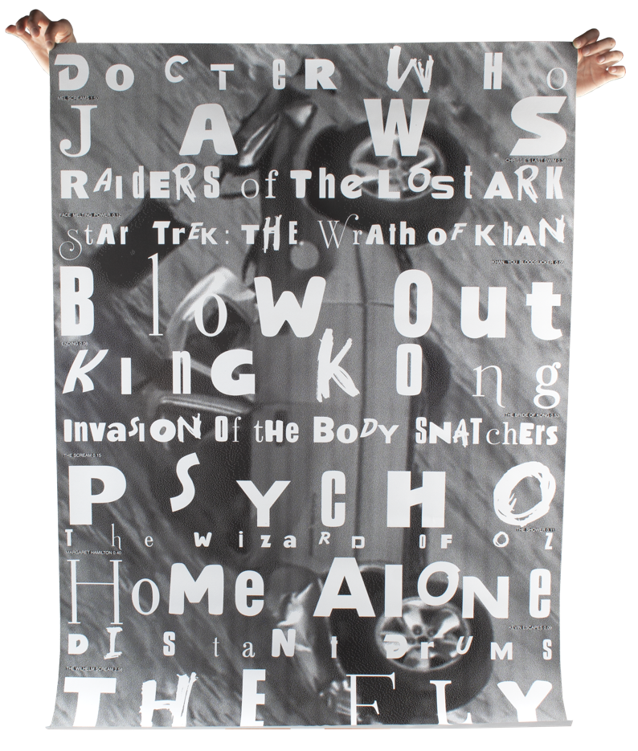
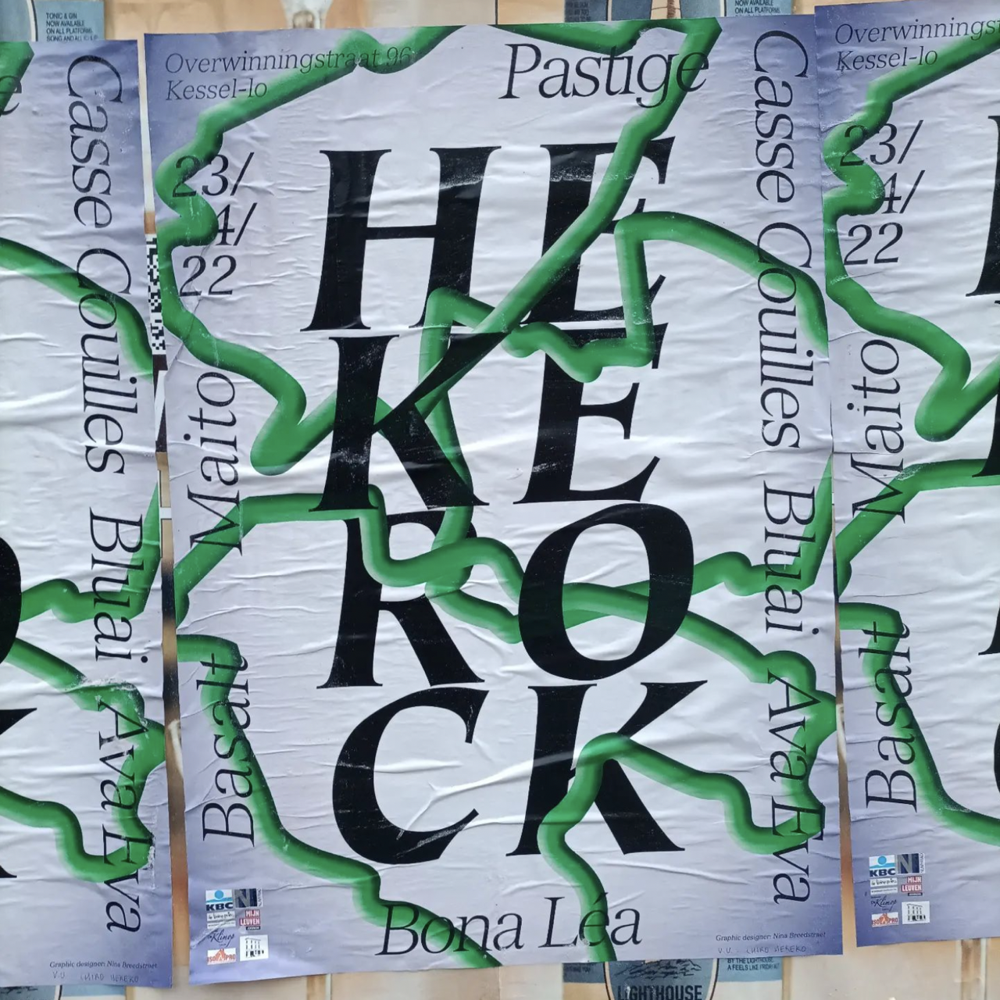
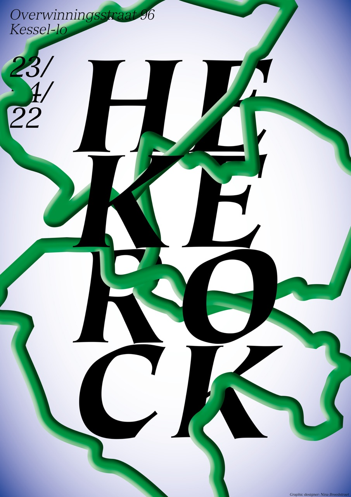
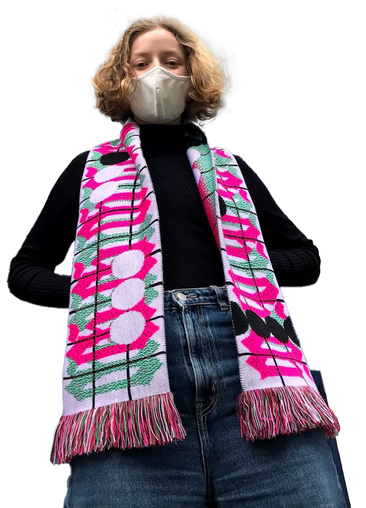
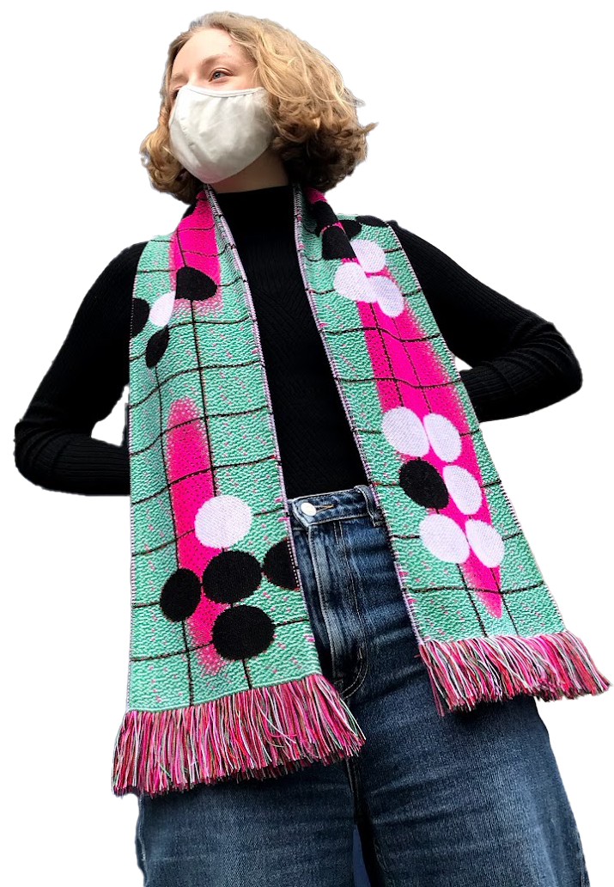
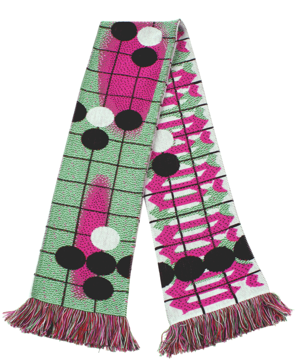
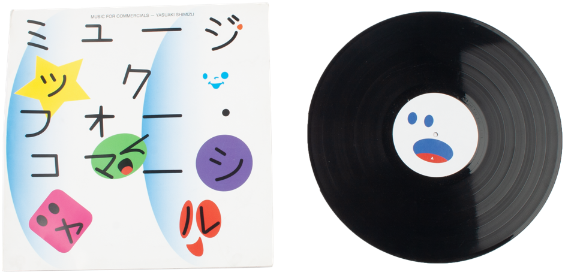
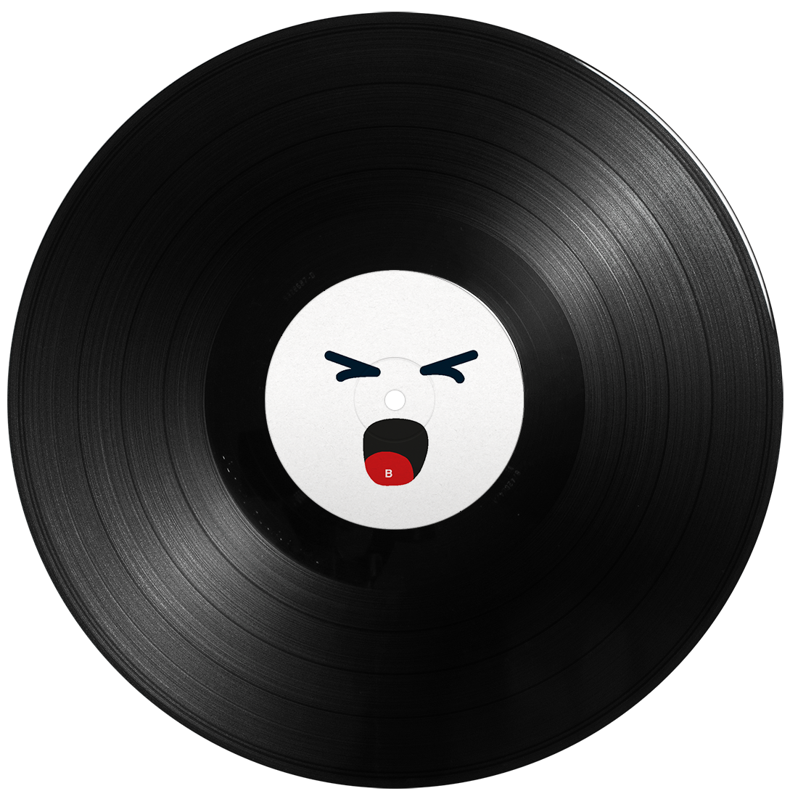
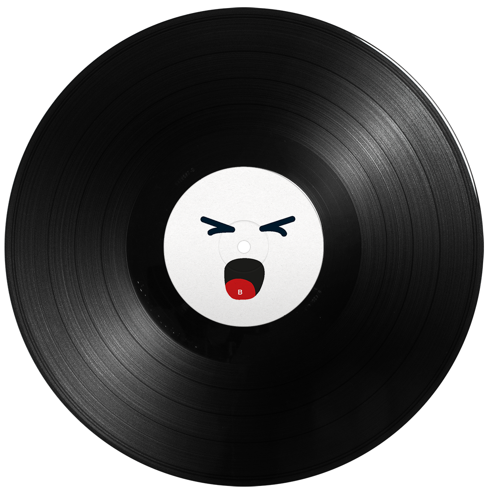
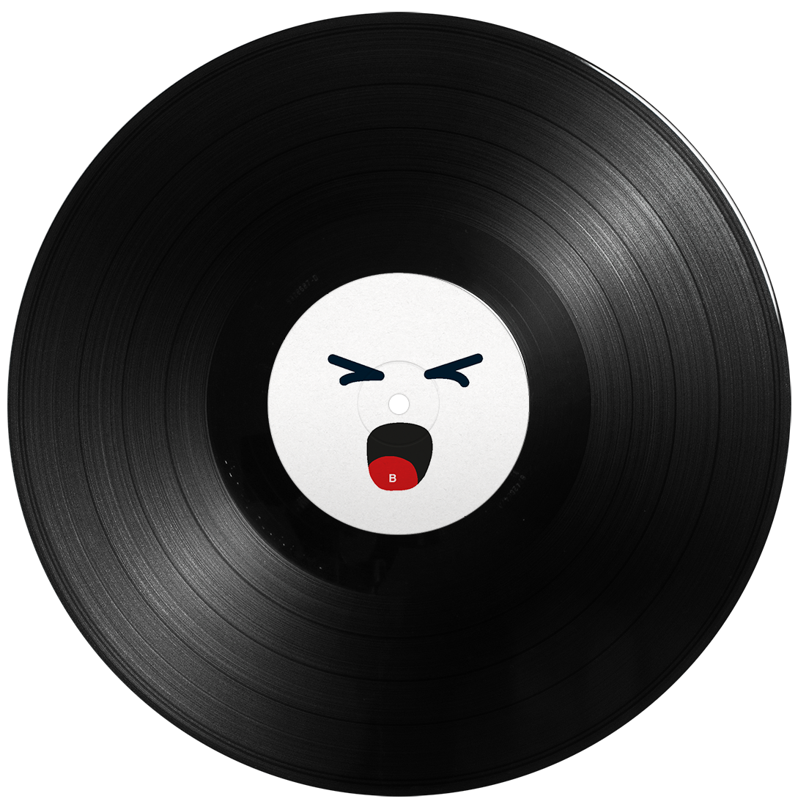

In my second year at Luca School of Arts, we were assigned to create a concept for a fictional radio station and design a poster to represent it. I came up with "Radio Scream", a station dedicated entirely to iconic screams from movies. For the poster, I featured several films known for their unforgettable scream scenes. Each title was accompanied by details such as the length of the scream and the name of the specific scene, emphasizing the power and drama of these moments.



This was one of my first real-world assignments! :) Chiro Hekeko
holds an annual contest for the graphic design of their festival,
and I decided to submit my design—and ended up winning.
Hekeko stands for Heverlee, Kessel-Lo, and Korbeek-Lo, so I
incorporated the geographical borders of these areas into the poster
and added a 3D effect to make them stand out. Once I had the concept
in place, I experimented with the layout, and that's how the final
design came together!



In my second year at Luca School of Arts, we were tasked with
designing a football scarf using a limited set of materials, themed
around a sport of our choice. After researching the materials, I
decided to create a scarf inspired by the board game Go.
The contrast between the grid of the board and the round playing
stones influenced my design. I drew further inspiration from a
computer version of Go that highlights the best moves with gradient
colors. I used these gradient colors throughout the rest of the
scarf. These colors allowed key elements—such as the repeating
"gogogogo" on the back and the white stone-like dots on the front—to
stand out more clearly.

 


This assignment was from my first year at Luca School of Arts, where
we were tasked with designing a vinyl cover for one of the albums
from a provided list. I chose "Music for Commercials" by Yasuaki
Shimizu, an album originally created for Japanese TV commercials.
For inspiration, I delved into vintage Japanese commercials, which
are known for their vibrant and colourful aesthetic. During my
research, I also discovered tiny smiley faces in Japanese signage,
which was a fun addition to my design. Overall, designing this vinyl
was a fun experience, full of creativity and exploration.